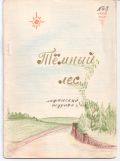

Тёмный лес
N3

МИНИАТЮРЫ █
(из ранее выходившего журнала "Комарик")
ПОДСЛУШАННЫЙ РАЗГОВОР
ВАСЬКА: А ты дурак.
ВОВКА: Ты, Васька, какой-то не такой!.. Как бы это сказать...
ВАСЬКА: Па-а! А чего Вовка умничает?!
ВАСЬКИН ПАПА: Нехорошо умничать.
ВОВКА: А чего Васька дурачится?!
ВАСЬКИН ПАПА: Нехорошо дурачится.
Вот и пойми, что на свете хорошо, а что плохо.
ВЕСНА
- Ой, мама! иди скорее сюда!
- Что там?
- Смотри!
- Что? Куда?
- На стекле с той стороны.
- Не вижу.
- Первая!
- Так что же?!
- Весенняя!
- Ну так что?!
- Муха!
ЛИРИКА
Хотите - похвалите,
хотите - побраните,
но всё же (извините)
хоть что-нибудь прочтите,
а впрочем - как хотите.
РАННИЙ ЦВЕТОК
Случилась ранняя весна.
Напоена водою,
Земля очнулась ото сна,
И лес дышал весною.
Глядяся в радостный поток,
Звеневший звонкой трелю,
Как солнце, солнечный цветок
Расцвёл под старой елью.
А ночью вновь пришёл мороз,
Поля осеребрились,
И красотою лунных слёз
Снежинки заискрились.
Роса на нежных лепестках
Прожгла следы мороза.
"Не стало раннего цветка."-
Твердит луна сквозь слёзы.
█
ДРУЗЬЯМ
И мы не живём без восторгов;
И, скинув привычную грязь,
Умеем душой ненадолго
Стремиться в небесную ясь.
И нашему сердцу понятны
Рождённые в гневном огне
Тревожные звуки сонаты
И светлые песни весне!
И нас не покинула дружба,
Тот греющий сердце камин,
Который особенно нужен,
Когда остаёшься один.
█
ОБЪЯВЛЕНИЕ
Есть надежда, что скоро выйдет первый номер журнала "Компас". Главный редактор журнала - █.
Товарищи лафанцы и сочувствующие им!!! Нужен матерьял, чтобы первый номер не был последним.
ПЕРЕСМЕШНИК
БАБА ЯГА
(народная сказка)
В лесу на курьих ножках
избушечка стоит,
а в той избушке старой
Баба-Яга сидит.
А ступа под избушкой,
метла за сундуком,
а баба с чёрной кошкой
сидит под потолком.
А баба всё колдует
и с кошкой говорит.
Иван по лесу едет,
на солнце меч горит.
Он дует в рог козлиный.
Ягу на бой зовёт,
Яга метлу достала,
метла сама метёт.
И села баба в ступу,
к Ивану в лес летит.
И вдруг остановилась:
Иван внизу свистит.
А свойство есть у ступы:
лишь только кто свистит,
замрёт на месте ступа
и дальше не летит.
Об этом знал Ивашка,
Ягу он поразил,
связал её, как надо,
на землю посадил.
Сразивши бабу злую,
живой воды спросил,
но только фигу, дулю
и кукиш получил.
Иван вошёл в избушку,
живую воду взял.
И всё, что было нужно,
Иван с собой забрал.
█
ОДА НА ВЗЯТИЕ АВТОБУСА
Почти Державин
I
С Кавказских гор бежит лавина.
Снега летящие гремят,
Эльбрусова дрожит вершина,
Нагорный стонет камнепад.
Грохочет гром, вода пылает,
Вулканы пепел извергают.
Моря кипят, в огне луна,
Земля дрожит, как школьный глобус!
О! Зевс! Ты видишь! За автобус
Идёт упорная война.
II
Как ветер тёмный лес качает,
Как волны бьются об утёс.
На трупе труп нагромождая,
Автобус так штурмует Росс.
Осада! Штурм! Картины ада!
Ничто ему в том не преграда...
Сметён, повален милитон,
Под грохот ног не смеет свистнуть,
А россы прут, где могут - виснут,
За нами крик, под нами стон.
III
Когда автобус, подъезжая,
Открыл одну передню дверь,
Многоминутный гнев срывая,
Толпа рванулась, зла, как зверь.
О! Выходящий! Торопись!
Но крики громче раздались,
И горе, горе, кто проспал.
О! Возликуй, толпа народа!
Тобою взяты оба входа,
А кто не вышел, тот пропал.
IV
О! На какие в мире кручи
Ты, Росс, ещё не восходил!
И как воспеть тебя, могучий
Любимец бога и светил!
Главою солнца досягаешь,
Через моря, как гром, ступаешь!
Мир тайным трепетом объят.
Французы, турки, немцы, шведы...
Не сосчитать твои победы!
Ещё одна - автобус взят!!!
█
Решение кроссворда, помещенного в прошлом номере "Тёмного леса".
| б | р | о | д
|
| о | к | н | а
|
| л | о | с | ь
|
| о | м | у | т
|
| т | о | п | ь
|
| о | к | н | о
|
ЧИТАТЕЛЯМ
Этот номер мы кончаем, как и все предыдущие номера нашего журнала, традиционной и почти безответной мольбой о матерьяле.
Смилуйтесь, читатели! Подайте журналу что-нибудь интересное.
Без надежды, но всё-таки с уважением, редакция "Тёмного леса".
Последнее изменение страницы 20 Mar 2019
ПОДЕЛИТЬСЯ: